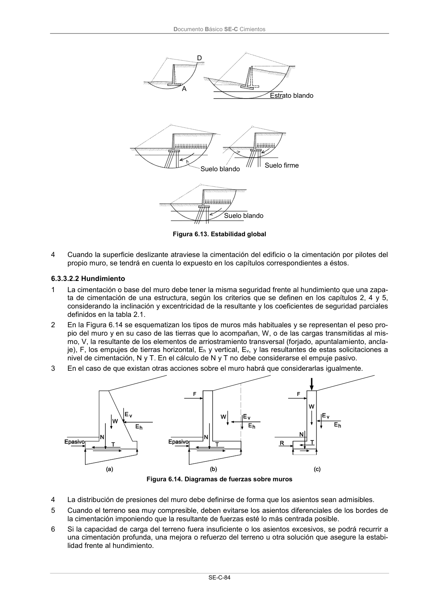

DB-SE-C Cimientos · edición 2019-12-20 · capa oficial
Documento DB-SE-C-oficial · SHA-256 del PDF a71133f4b0dca253e45ea3071c70f2a512354bcc5cd841bf89b1a502f567ac5e
Copia fiel del PDF fuente · Fuente oficial
Ficha de la disposición en la fuente oficial
Formatos: JSON del segmento · Markdown
6.3.3.2.1 Estabilidad global y fallo combinado del terreno y del elemento estructural 1 El conjunto del muro incluida su cimentación, puede fallar mediante un mecanismo de rotura aún más profundo que éstos, o que no siendo tan profundo pudiera cortarlos. 2 Debe comprobarse que la seguridad al deslizamiento a lo largo de la superficie pésima posible, que incluya en la masa deslizante al muro completo y a sus elementos de sujeción, no es inferior al lími- te establecido. 3 En la Figura 6.13 se recogen algunos casos típicos de inestabilidad frente a un deslizamiento gene- ral de muros de contención. Documento Básico SE-C Cimientos SE-C-84 Suelo blando A D Estrato blando Suelo firme Suelo blando Figura 6.13. Estabilidad global 4 Cuando la superficie deslizante atraviese la cimentación del edificio o la cimentación por pilotes del propio muro, se tendrá en cuenta lo expuesto en los capítulos correspondientes a éstos.
